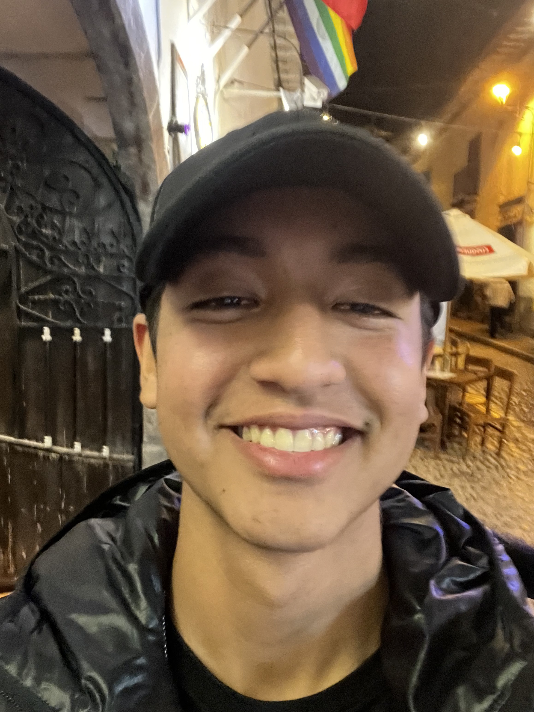

Hello, I'm Gonzalo Andrés Gallo Troncos. Welcome to my cultural connections page!

Cultural Description
Cultural Shocks in Vancouver
The Quiet Streets: Coming from Peru, where the streets are always bustling with sounds horns blaring, vendors shouting, and people chatting Vancouver can feel like a library in comparison. It’s amazing, but a bit of an adjustment from the lively noise back home.
Weather Preparation: In Vancouver, it seems like everyone has a raincoat and umbrella ready at all times, even in summer! In Peru, we don’t experience the same level of rain, so I wasn’t quite prepared for the sudden downpours. Now, “Is it going to rain?” is a constant question in my mind.
Things I Miss Most from Peru
The Flavors of Food: No matter how good the ingredients are here, nothing compares to a plate of home-cooked ají de gallina or lomo saltado. The complex flavors, fresh ingredients, and spices are something uniquely Peruvian.
Gathering with Friends and Family: In Peru, spending time with friends and family is a daily tradition—whether it’s a shared meal, a quick coffee, or a full-on gathering. It’s a way of staying connected, no matter how busy life gets. Here, that closeness is harder to find, and I really miss those moments of warmth and togetherness with loved ones.
Amazing Things About Vancouver
Nature at Every Turn: Vancouver feels like a natural paradise. The mountains, beaches, and forests are never more than a short trip away. It’s a surreal feeling to have these landscapes so close to the city.
The Multicultural Vibe: Vancouver is like a world map come to life. You meet people from every corner of the globe, and it’s such a rich blend of cultures, ideas, and languages. It’s good to be part of a city that celebrates diversity and allows people to express their identities freely.
My Top Personal Goal
My top goal right now is to gain a lot of knowledge in my classes and met good people to sorround. Also get out of my comfort zone doing new things like meeting new people or do activities like hiking that here are normal.